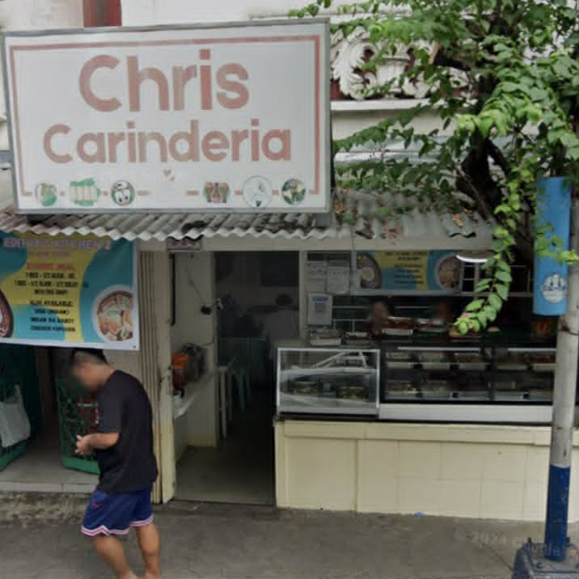
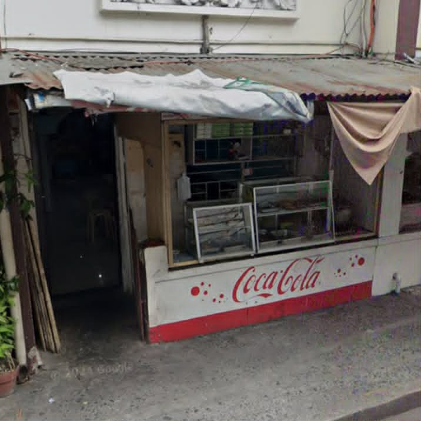

Affordable and delicious meals near TUP for students on a budget.
Daddy's Sisig House
Budget-Friendly Meals
Daddy's Sisig House offers delicious and affordable ulam,
especially their famous sisig. They also have different
choices such as chicken teriyaki, Bicol Express, and other
flavorful chicken dishes with different sauces.

Chris Carinderia
Affordable Filipino Food
Chris Carinderia has many different ulam to choose from,
including vegetables and other tasty dishes. The place also
has a comfortable and organized dining area, while keeping
the food affordable for students.

T&J Eatery
Student-Friendly Eatery
T&J Eatery is a good option for students who want a tasty
and affordable meal. With flavorful ulam and filling servings,
it is a convenient choice for a quick and satisfying meal.
